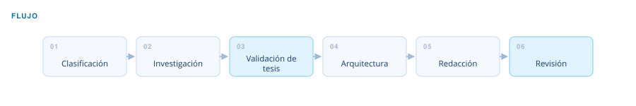

Automatización financiera · LinkedIn Finance Ghostwriter V2.5
Investigación y redacción financiera
De un hecho financiero a un texto con tesis, cifras y fuentes.
El problema
Publicar análisis con frecuencia obliga a elegir entre volumen y rigor, y lo que suele ceder es la verificación. Una cifra sin respaldo destruye más credibilidad de la que construyen diez publicaciones correctas.
Entra
Una noticia, un resultado trimestral, una operación corporativa o un tema.
Sale
Publicación de feed de hasta unos 1.800 caracteres, o ensayo analítico de 1.200 a 1.800 palabras.
El flujo

Qué decide y cómo
Estilo
Cinco: análisis de empresa, noticia corporativa, educativo, educativo promocional y ensayo analítico.
Audiencia
Dos: estudiantes de pregrado y profesionales del sector. Cambian el vocabulario y la profundidad, no el rigor.
Tesis
Tres salidas posibles tras la investigación: seguir, reencuadrar el ángulo o descartar el tema.
Control de calidad
Ninguna cifra se publica con menos de dos fuentes verificables. Lo aproximado se marca como aproximado. Si tras la investigación la tesis no se sostiene, el flujo se detiene antes de la redacción en lugar de producir un texto que la fuerce.
Arquitectura
- 5 módulos de estilo
- 2 módulos de audiencia
- Reglas de voz y de rigor analítico
- Motor de inferencia de tesis
Qué construí
Definí las reglas de voz, los criterios de rigor y el criterio de descarte que decide qué no se publica.
¿Un flujo así para tu proceso?
Este nació de un cuello de botella real. Si tienes un proceso financiero que se repite cada mes, probablemente se pueda sistematizar igual.